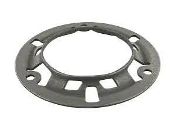
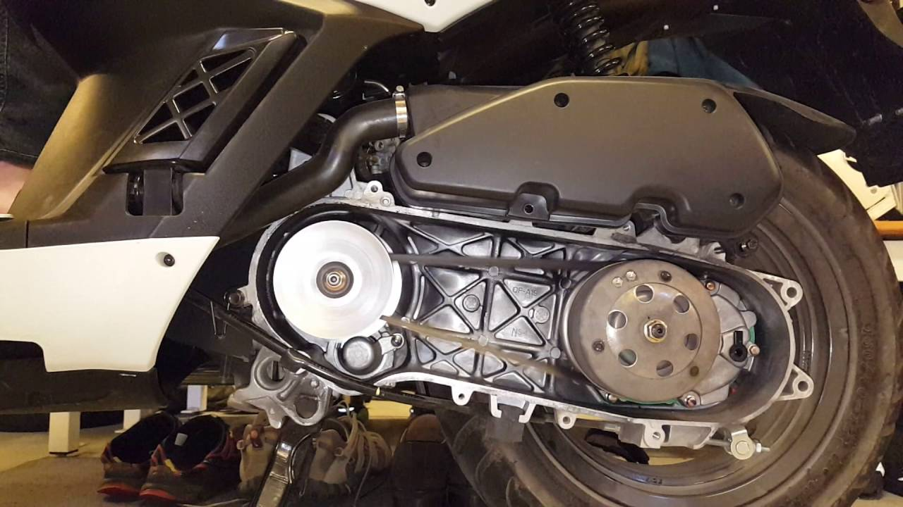
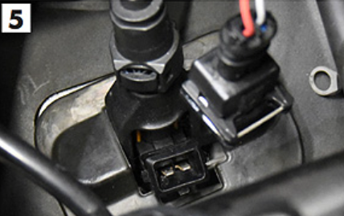
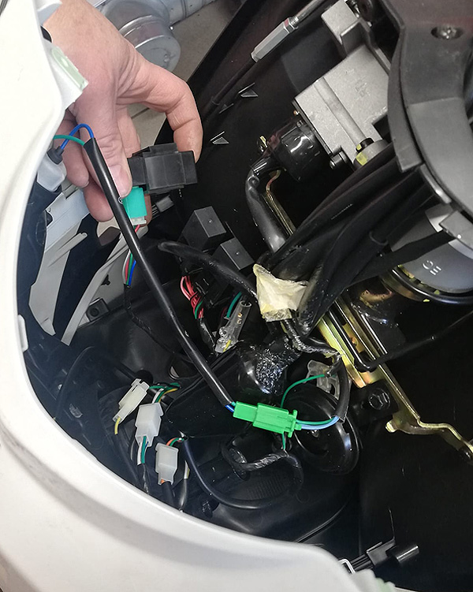

Börja med att avstrypa mopeden. Då mopeden är direkt insprut finns det endast en strypning, den kallas för variatorbricka. Den ser ut som sådan och sitter inuti variatorn (bild nedanför)


Sedan kan du byta ECU, och installera Speedbox som säger till datorn i moppen att varva högre, vilket den nya ECUn stödjer.


Medans du håller på finns det en elspärr du kan dra bredvid ECUn...
Efter det kan du byta variatorvikter, byta till trimrör, mm!
Med denna trimguide kan du förvänta dig komma upp i 70km/h, 65 om du endast drar strypningen! Kör inte olagligt nu och lycka till